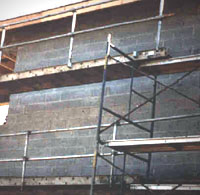

|
Am
I In Danger?
Working
with heavy equipment and building materials on the limited space
of a scaffold is difficult. Without fall protection or safe access,
it becomes hazardous. Falls from such improperly constructed scaffolds
can result in injuries ranging from sprains to death.
How Do
I Avoid Hazards?
- Construct
all scaffolds according to the manufacturer's instructions.
- Install guardrail systems along all open sides and ends of
platforms.
- Use
at least one of the following for scaffolds more than 10 feet above
a lower level:
- Provide
safe access to scaffold platforms
- Do
not use climb cross-bracing as a
means of access.
|

This scaffold is not in compliance with the regulations because it mixes several
different scaffold components in the same scaffold. The guardrails are also improper
because they are not complete.

Construction Worker Dies
|